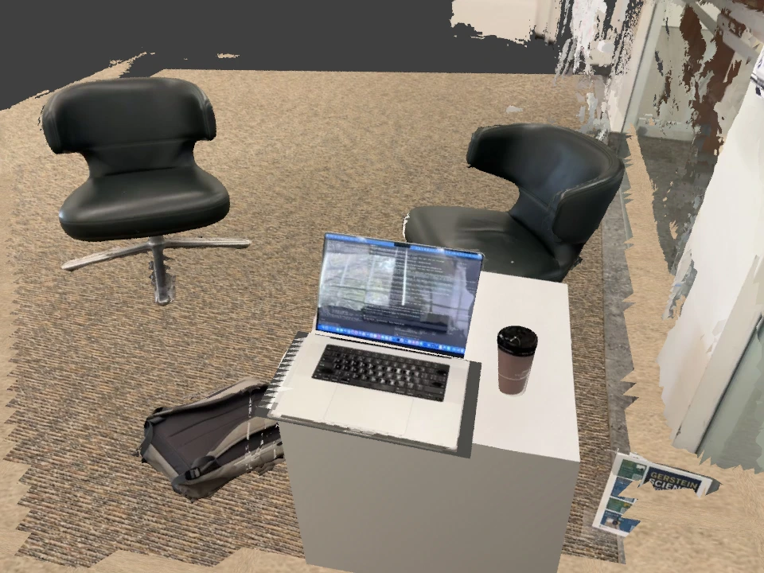
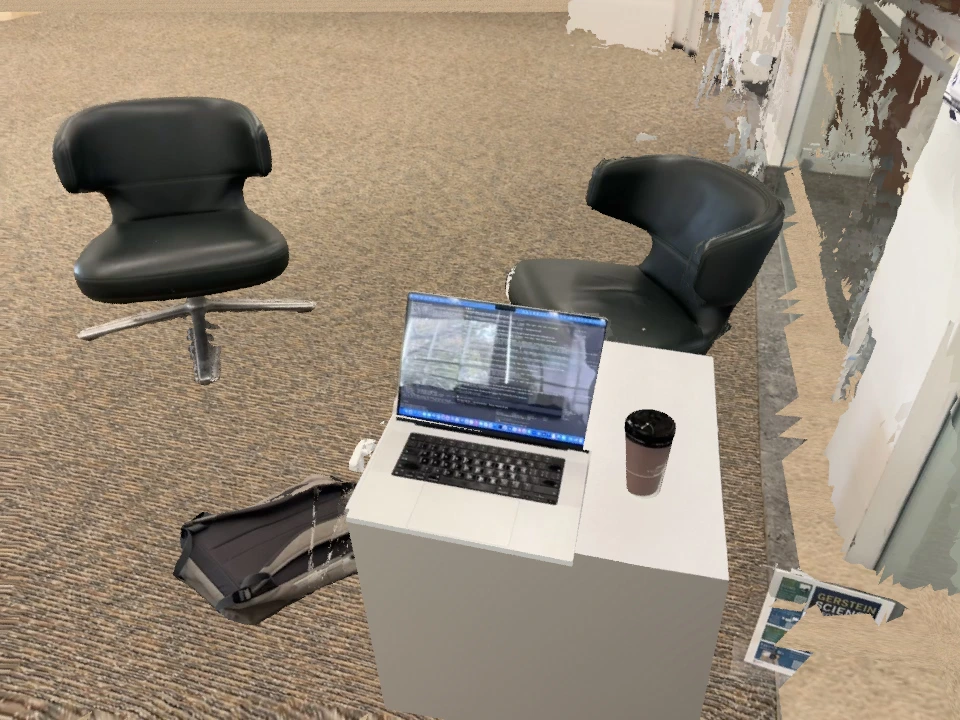

Chair

Input crop. Generated candidate: canonical GLB ↓ · fitted GLB ↓
Methods · Reproducible experiments
Recover the camera. Separate each object. Preserve the photographs. Test the geometry a robot will touch.
Research prototype. Complete topology and source-view appearance are separate checks; neither establishes sim-to-real readiness.
The pipeline
Current evidence
| Check | Result | Limit |
|---|---|---|
| Video masks | 471 frames · 2,826 masks · no missing frames | Timing completeness is not segmentation accuracy |
| Object separation | 4,523 ambiguous fixed-room faces removed | Some hidden surfaces and background structure remain incomplete |
| Closed visual assets | All seven principal visual meshes pass the boundary-edge audit | Dimensions and hidden surfaces are fitted |
| Laptop closure | Stops at keyboard and obstructing table | 5-second, 3 Nm stress test; maximum numerical penetration 1.39 mm |
| Chair / backpack completion | Closed shells / multi-view carving selected | Hidden shape remains inferred; TripoSR and Poisson rejected |
| Photographic appearance | Textured meshes and SHARP Gaussian variants | Large novel views, relighting and real-task transfer unverified |
Selected repair
The chair repair preserves the observed fronts and closes their backs. Multi-view carving completes the backpack. Voxel union and local repair remove the self-intersections that a simple watertight test missed. Every selected part moves with its object.


| Object | Geometry | Reserved silhouette audit |
|---|---|---|
| Chair Left | 4 closed parts · 30,000 faces | 0.881 → 0.878 |
| Chair Right | 3 closed parts · 30,000 faces | 0.320 → 0.321 |
| Backpack | 1 closed parts · 24,000 faces | 0.870 → 0.901 |
All three selected meshes have manifold vertices/edges and zero self-intersection pairs. The chair backing and backpack closure are inferred. Silhouette scores use SAM pseudo-references in two reserved views; upstream cameras and depth use the shared capture. Occlusion is not removed from standalone silhouettes. These scores do not establish real shape accuracy.
| Contact asset | Complexity | 95th-percentile surface distance visual → contact / contact → visual |
|---|---|---|
| Chair Left | 586 convex pieces | 6.1 mm / 7.1 mm |
| Chair Right | 504 convex pieces | 5.2 mm / 6.8 mm |
| Backpack | 901 convex pieces | 1.5 mm / 4.5 mm |
The selected local convex cover runs at 6.04× real time in the single-process CPU test; the lighter CoACD profile reaches 16.26×. Both XML profiles are included. This excludes rendering, a robot and batched RL. Fit uses 2,000 surface samples in each direction. Internal convex-piece faces are included; this is not a union Hausdorff test or a physical calibration. Chair supports, rigid cushions/backpack, dimensions, mass and friction remain assumptions. Glass-wall reconstruction still has visible artifacts.
Object completion
TripoSR generated complete chair and backpack candidates from the actual video masks on CPU. Similarity fitting tested 24 orientation initializations against the reconstructed surfaces. The candidates have lower silhouette agreement than the partial scans and are excluded from the selected scene.
Input crop. Generated candidate: canonical GLB ↓ · fitted GLB ↓

Input crop. Generated candidate: canonical GLB ↓ · fitted GLB ↓
| Object | Scan silhouette IoU | Generated candidate IoU |
|---|---|---|
| Chair | 0.888 | 0.535 |
| Backpack | 0.676 | 0.381 |
SAM masks are pseudo-references. Standalone silhouettes include occluded geometry. Alignment used the shared reconstruction, so these are not held-out geometry measurements. TripoSR used a 192³ extraction grid and a documented CPU marching-cubes adapter. Poisson completion produced one main component but failed watertightness checks and extrapolated below the floor.
Full comparison data ↗Research direction
RE3Sim and SplatSim inform the separation of photographic rendering and physical geometry. SAM 3D Objects and TRELLIS 2 are candidates for complete object assets.
SAM 3D code and converted weights are downloaded. Its Apple-silicon port cannot access Metal in the current execution session; the official CUDA path and TRELLIS have not run. Installed software is not counted as a successful experiment.
The harness records commands, configuration hashes, outputs and failures. New captures require their own landmarks, segmentation prompts, scale measurements and fitted geometry. Robot-frame calibration and real contact validation remain required before policy transfer.